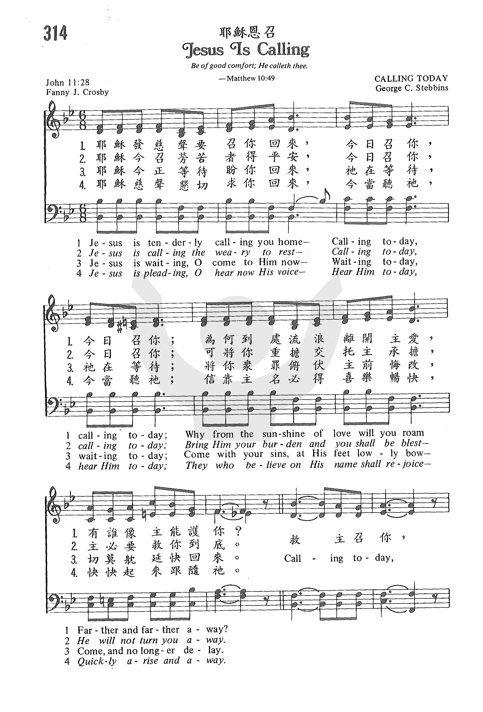
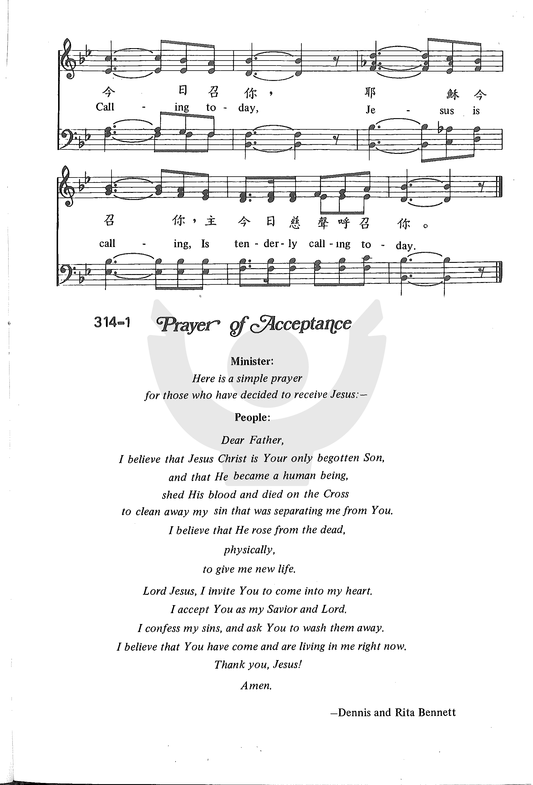

1152
Jesus Is Calling ( Jesus
is tenderly calling thee home)
_Fanny
J. Crosby 耶稣恩召
|
|
|
|
1 Jesus is tenderly calling thee home-
Calling today, calling today;
Why from the sunshine of love wilt thou roam
Farther and farther away?
Refrain:
Calling today,
Calling today,
Jesus is calling,
Is tenderly calling today.
2 Jesus is calling the weary to rest-
Calling today, calling today;
Bring Him thy burden and thou shalt be blest-
He will not turn thee away. [Refrain]
3 Jesus is waiting; O come to Him now-
Waiting today, waiting today;
Come with thy sins, at His feet lowly bow-
Come, and no longer delay. [Refrain]
4 Jesus is pleading; O list to His voice-
Hear Him today, hear Him today;
They who believe on His name shall rejoice-
Quickly arise and away. [Refrain]
Source: One
Lord, One Faith, One Baptism: an African American ecumenical hymnal #390
|
耶穌恩召
專輯: 真耶穌教會讚美詩
1.耶穌之溫柔聲召你回家，今日召你，今日召你；
為何離主遊蕩，貪愛虛邪？越久越遠越走差？
2.有罪之人！主召你得救恩，今日召你，今日召你；
將你罪擔交託主得赦免，主必拯救你靈魂。
3.勞苦之人！主召你得安寧，今日召你，今日召你；
將你重擔交託主便身輕，主必解除你苦情。
4.迷路之人！主召你走正路，今日召你，今日召你，
倚靠主能力，引導你腳步，一生一世蒙眷顧。
副歌：今日召你，今日召你；
耶穌今召你，衪溫柔聲今日召你。 |
|
https://www.zanmeishige.com/tab/25682.html?songbook=1&index=314


|
|
|
|

- Jesus Is Tenderly Calling Thee Home by Fanny Crosby
-
- 314 耶穌恩召 Jesus Is Calling -piano
-
Softly and Tenderly
(2013) - Mormon Tabernacle Choir
https://youtu.be/H-3JySkGz3o
Will Lamartine Thompson (1847-1909)
1152
Jesus Is Calling 耶稣恩召
Tune Information
|
Title: |
[Jesus is tenderly calling thee home] |
|
Composer: |
George C. Stebbins (1883) |
|
Meter: |
10.8.10.7 |
|
Incipit: |
55553 45671 17676 |
|
Key: |
B♭
Major |
|
Copyright: |
Public Domain |
耶稣恩召（ Jesue Is Calling） - 学圣诗
耶穌溫柔慈聲懇切在呼喚，祂呼喚你，呼喚我。
祂耐心在你心門外等候你，祂等候你，等候我。
耶穌懇切請求，為何還耽延？ 祂懇請你，懇請我。
為何遲延不顧救主的慈憐？ 祂憐憫你，憐憫我。
光陰飛逝奔流，一刻不停留，它不等你，不等我。
陰暗死亡籠罩，黑夜快來臨，快臨近你，臨近我。
耶穌應許賜下奇妙大慈愛，應許愛你，也愛我。
罪過雖多，主有憐憫肯赦免，祂赦免你，赦免我。
（副歌）
歸家，歸家，憂傷困倦者歸家，
耶穌溫柔慈聲懇切在呼喚，呼喚罪人快歸家。
葛理翰佈道團在世界各地舉行佈道大會時，証道後邀請決志歸主者走向台前，接受代禱和陪談。 每當會眾俯首默禱，詩班柔聲地唱著「歸家」，千百傷心悔改的男女老少自廣大會場的四面八方湧向台前，決志歸主，場面是多麼地感人！
本聖詩詞曲都是湯慕聖（Will L. Thompson, 1847-1909，見七月十八日）在1882年所作，當時慕迪是神重用的佈道家，他和孫基常用這首聖詩作呼召。
慕迪說：「湯慕聖的品德與他創作的詩歌一樣的真誠，樸實和正直。」
1899年十二月慕迪病危，醫生禁止見客，當他知道湯慕聖前來，一定要見他。
他握著老友的手，誠懇地說：「湯慕聖，我寧願是「歸家」這首聖詩的作者，它遠勝過我一生的工作」。
湯慕聖隨身帶著一個小本子，無論在車上，居家或旅途中，每有一主題或靈感出現，就記在小本上，事後有曲調時，就配樂成歌。
有時他先有了歌譜在腦中，把和聲寫下，反復在心中吟哼，歌詞就因而產生。
這首詩是他親身的經歷，他體會到主耶穌的呼召，是溫柔慈愛的聲音，正如列王記上19:11-12所載，以利亞在何烈山的經歷，耶和華不在疾風、地震、烈火中，而是火後有微小的聲音。愛的聲音總是輕柔悅耳的，也只有愛主的人才能聽到。
芬妮克羅斯比（Fanny J. Crosby）有一首「耶穌恩召」（Jesus Is
Calling）與本詩歌有一共同點，即主的呼召都用溫柔慈聲。
湯慕聖覺得他的一切都是天父所賜，因此中年時就撇下世界上的榮華富貴，決心完全奉獻。
當年交通不便，農村沒有收音機或電唱機，因此鄉民沒有機會聽到福音的詩歌，湯慕聖就用馬車載上了一台鋼琴，到各鄉各村自彈自唱，深受鄉民的愛戴。
中英文聖詩集參考
英文歌名 Softly
and Tenderly
頌主新歌 292
頌主新歌(中英雙語) 294
教會聖詩 282
生命聖詩 203
新聖詩 96
歡欣讚美 479
聖徒詩集 624
聖詩 548
讚美 125
世紀讚頌 273
讚美詩(新編) 219
青年聖歌I 137
校園詩歌I 73
註：「歡欣讚美」詩集為英文版，原名是
Celebration Hymnal．
http://www.hymncompanions.org/Aug/18/stream.php
"JESUS IS TENDERLY CALLING"
"Come
unto Me…and learn of Me; for I am meek and lowly in heart…" (Matt.
11.28-20)
INTRO.:
A
song that talks about the call of Jesus to come and learn of Him is "Jesus Is
Tenderly Calling" (#294 in Hymns
for Worship Revised and #600 in Sacred
Selections for the Church). The text was written by Frances (Fanny) Jane
Crosby VanAlstyne (1820-1915). The tune (Calling Today) was composed by George
Coles Stebbins, who was born on Feb. 26, 1846, in Orleans County, NY, where he
grew up on a farm. After studying music at Buffalo and Rochester, both in New
York, he moved to Chicago, IL, in 1869 at the age of 23, where he was associated
with the Lyon and Healy Music Co. Also, he served as music director at the First
Baptist Church. During this time he met revival evangelist Dwight L. Moody and
became acquainted with the leading religious musicians of the day including
George Frederick Root, Philip Paul Bliss, Horatio Richmond Palmer, and Ira David
Sankey.
In 1874, Stebbins moved back east to Boston, MA, where he became director of the
Clarendon St. Baptist Church, serving for a couple of years, and then in 1876 he
accepted a similar position with the Termont Temple in Boston for about six
months. However, during that summer, he was persuaded to join the evangelistic
team of D. L. Moody and Ira D. Sankey in their work. For the next 25 years he
was associated with them and others in their campaigns. In addition to his work
as a song leader, he was busy writing hundreds of gospel songs and editing
numerous hymn collections. After the death of P. P. Bliss, he helped in
compiling editions three through six of the Gospel
Hymns series with Sankey and James McGranahan.
"Jesus Is Tenderly Calling" first appeared in Gospel
Hymns No. 4, published in 1883. In 1924 Stebbins wrote his Memoirs
and Reminiscences which provides an interesting insight into
his life and work. On pages 105 and 106 he said that there was no incident which
occasioned the writing of Miss Crosby’s text or his melody to accompany it and
that neither the words nor the music impressed him as having more than ordinary
merit. Thus, he was surprised at the popularity and success of it as an
invitation song in his evangelistic work. Other well known Stebbins tunes are
used with "Savior, Breathe an Evening Blessing," "Take Time to Be Holy," "Have
Thine Own Way, Lord," "Ye Must Be Born Again," and "I’ve Found a Friend."
Stebbins died just a few months short of his 100th birthday at Catskill, NY on
Oct. 6, 1945.
Among hymnbooks published by members of the Lord’s church during the twentieth
century for use in churches of Christ, the song appeared in the 1921 Great
Songs of the Church (No. 1) and the 1937 Great
Songs of the Church No. 2 both edited by E. L. Jorgenson; the
1948 Christian
Hymns No. 2 and the 1966 Christian
Hymns No. 3 both edited by L. O. Sanderson; the 1963 Abiding
Hymns edited by Robert C. Welch; and the 1963 Christian
Hymnal edited by J. Nelson Slater. Today it may be found in
the 1971 Songs
of the Church, the 1990 Songs
of the Church 21st C. Ed., and the 1994 Songs
of Faith and Praise all edited by Alton H. Howard; the
1978/1983 (Church)
Gospel Songs and Hymns edited by V. E. Howard; the 1986 Great
Songs Revised edited by Forrest M. McCann; and the 1992 Praise
for the Lord edited by John P. Wiegand; in addition to Hymns
for Worship, Sacred
Selections, the 2007 Sacred
Songs of the Church edited by William D. Jeffcoat.
The song mentions several aspects of Jesus’ call of invitation.
I. Stanza 1 says that Jesus is calling us to come to Him today.
"Jesus is tenderly calling thee home, Calling today, calling today;
Why from the sunshine of love wilt thou roam Farther and farther away?"
A. If a person needs to obey the gospel, today is the only time that he has
assurance of being able to do so: Heb. 3.15
B. As the Sun of Righteousness, He calls us today into the sunshine of His
love: Mal. 4.2
C. But like the prodigal son, so many wander farther and farther away: Lk.
15.11-13
II. Stanza 2 says that Jesus is calling us to come to Him with our burdens
"Jesus is calling the weary to rest, Calling today, calling today;
Bring Him thy burden and thou shalt be blest; He will not turn thee away."
A. Jesus promises us rest from our sins so that we can have the hope of eternal
rest when this life is over: Rev. 14.13
B. But to have this rest, we must bring our burdens to Him: Psa. 55.22
C. Thus, our response must be like that of blind Bartimaeus who arose and came
with his burden of blindness to find healing from Jesus: Mk. 10.46-52
III. Stanza 3 says that Jesus is calling us to come to Him now
"Jesus is waiting, O come to Him now, Waiting today, waiting today;
Come with thy sins, at His feet lowly bow; Come, and no longer delay."
A. Paul reminds us that when it comes to being saved, now is the accepted time
because now is the time of salvation: 2 Cor. 6.2
B. We need to come to Him now because we need to do something now about our
sins: Rom. 3.23, 6.23
C. Therefore, we must come to His feet and lowly bow; this is symbolic of the
attitude of complete obedience that must characterize those who come to Jesus:
Heb. 5.8-9
IV. Stanza 4 says that Jesus is calling us to come to Him for joy
"Jesus is pleading, O list to His voice: Hear Him today, hear Him today;
They who believe on His name shall rejoice; Quickly arise and away."
A. We must listen to the voice of Jesus because God speaks to us through Him:
Mt. 17.3, Heb. 1.1-2
B. Those who listen to Jesus and obey His word can rejoice: Psa. 89.16, Phil.
4.4
C. But, again, this rejoicing can be experienced only by those who come to Him
in obedience to His word: Acts 8.26-39 (Ellis Crum in Sacred Selections changes
the final word of the stanza to "obey")
CONCL.:
The chorus reiterates the fact that Jesus calls us to come to Him.
"Calling today! Calling today!
Jesus is calling, Is tenderly calling today."
It encourages those who need to obey the gospel not to wait but to take the
opportunity that they have. Originally published with the scripture reference,
"Arise, he calleth thee" (Jn. 11.28), this is a very effective hymn of
invitation to remind the lost that "Jesus Is Tenderly Calling."
https://hymnstudiesblog.wordpress.com/2008/07/26/quotjesus-is-tenderly-
Jesus Is Calling
Wordwise Hymns
Words: Frances Jane (“Fanny”) Crosby (b. Mar. 24, 1820; d. Feb. 12, 1915)
Music: George Coles Stebbins (b. Feb. 26, 1846; d. Oct. 6, 1945)
Links:
Wordwise Hymns
The Cyber Hymnal
Note: There are several hymns posted in the Cyber Hymnal entitled Jesus Is
Calling. To distinguish this one, it is listed there as Jesus Is Tenderly
Calling You Home. And regarding that word “You,” sometimes the modernizing of
the language of our hymns and gospel songs gets in the way of the poetry, and
occasionally even the message suffers. In this case, it isn’t difficult to
change “thee” and “thy” to “you” and “your,” as some hymn books have done–and if
you see a need for that.
Composer George Stebbins also provided the tune for Fanny Crosby’s Saved by
Grace. The two servants of the Lord are notable for their long lives. Stebbins’s
ninety-nine years provided a link between the gospel song writers of the
nineteenth century and those who ministered well into the twentieth. Because he
knew many of the earlier musicians and evangelists personally, he was a source
of important information. This is preserved in George Stebbins’s 1924 book
Reminiscences and Gospel Hymn Stories.
Before he entered his music ministry, including a twenty-five year association
with Mr. Moody, Stebbins married Elma Miller and the two formed a wonderful
partnership. She often travelled with him, even on long trips overseas. Elma
sang duets with George, and conducted meetings for ladies during evangelistic
crusades.
The present hymn was written in 1883, after Mr. Stebbins returned from an
evangelistic tour of Scotland with D. L. Moody, and it was intended to be used
with invitations to trust Christ as Saviour in evangelistic meetings. The
composer confesses he didn’t think much of it at the time, and was surprised at
how popular and useful it became.
CH-1) Jesus is tenderly calling thee home
Calling today, calling today,
Why from the sunshine of love wilt thou roam,
Farther and farther away?
Calling today, calling today,
Jesus is calling,
Is tenderly calling today.
“Calling today,” yes. And actually, today (in fact, the present moment) is the
only time that God guarantees us. It is dangerous to put off a decision for
Christ as the Roman governor Felix did when he said to Paul, “When I have a more
convenient time I will call for you” (Acts 24:25). As the Lord Jesus indicates
in a parable, the devil is most adept at snatching away the seed of the Word
that it is sown, before it has to time to take root and bear fruit (Matt. 13:4,
19). Paul urged those to whom the Lord had graciously presented His Word to
respond, without delay.
“We then, as workers together with Him also plead with you not to receive the
grace of God in vain. For He says: ‘In an acceptable time I have heard you, and
in the day of salvation I have helped you.’ Behold, now is the accepted time;
behold, now is the day of salvation” (II Cor. 6:1-2).
God Himself warns that withholding a commitment to Him tries His patience, and
could well end in disaster. “Today, if you will hear His voice: Do not harden
your hearts, as in the rebellion, as in the day of trial in the wilderness, when
your fathers tested Me; they tried Me, though they saw My work” (Ps. 95:7-9).
The grace of God is profound, reaching to the worst of sinners, but the
invitation isn’t extended indefinitely. The day of opportunity will end. As the
hymn puts it, “Come, and no longer delay.”
CH-3) Jesus is waiting, O come to Him now,
Waiting today, waiting today,
Come with thy sins, at His feet lowly bow;
Come, and no longer delay.
The one who comes to Christ has this wonderful promise: “The one who comes to Me
I will be no means [not under any circumstances, not for any reason] cast out”
(Jn. 6:37). Even a condemned criminal on the brink of death was welcomed by the
Saviour (Lk. 23:42-43). “Let him who thirsts come. Whoever desires, let him take
the water of life freely” (Rev. 22:17). How gracious of the Lord to extend an
invitation to lost sinners to come to Him and be saved! (Cf. II Pet. 3:9-10.)
Questions:
1) What excuses do some give for putting off a decision to receive Christ? What
is likely the real reason beneath the surface?
2) What are your favourite hymns of invitation? Does your church make use of
them?
Links:
Wordwise Hymns
The Cyber Hymnal
https://wordwisehymns.com/2012/08/31/jesus-is-calling/
4 上帝的恩召
「基督精兵」那首诗歌对教会信徒是这样描述的，说他们是「被拣选，蒙呼召，忠心追随主的人」。可是，这样讲，对圣经经文却做了一些微妙的更改。启示录中所记载的则是另外一个次序，基督徒在那里被称为是：「蒙召、被选、有忠心的」人（启17:14）。这是不是意味圣经教导说，人是先蒙召，然后才再被拣选的呢？根据我们前几章所谈的、在罗马书和以弗所书中所讲的，这是不可能的。不过，话又说回来，如果我们能先来探讨有关「恩召」这个教义，然后再来详细查考「拣选」、「预定」这些比较敏感的课题，这对我们的研习也许会更有效。
我这样安排的原因，幷非仅仅是为了把具争议性的课题搁到最后。其实，不少人发现，就算是那位提及预定论时不能不提的改教家，加尔文自己，也曾经为了如何安置「上帝的拣选」那一章书而大伤脑筋。在他的那部经典作品《基督教要义》里，他终于决定把这个题目放到全书的最后。把「上帝的拣选」这一章放到最末了，实在有点奇怪。事实上，应该有更合乎逻辑的排列次序，比如说，西敏斯特信条就把这个题目放到整个教义系统的最前面。但加尔文的处理手法和罗马书里的排序则非常相似。当然，要是和以弗所书对照的话，则又是另一回事了。「上帝的拣选」在以弗所书中是明显放在一开始的。因此，圣经可以说是两种排列都有。
从某一个角度来说，为了使学习可以循序渐进，我觉得将预定论放到最后才讨论不失为明智之举，因为基督徒在遇到具争议性的课题时，往往就会给某那一点跘住，结果忘记去综合整本圣经的教训，或结合其他有关的教义一幷思考。就以「上帝的拣选」为例，若不先对基督徒新生命的特质有一完整的认识，想要领会拣选这个题目的真正意思几乎是不可能的。为此原因，让我们暂时放下这个题目不谈，等我们把剩下的圣经教导都弄清楚了，再回过头来处理这个题目。在本章里，我们要集中讲论的是「上帝的呼召」。
上帝的呼召
我们之所以成为基督徒，是因为上帝呼召了我们。彼得告诉我们：「然而你们是蒙拣选的族类，是君尊的祭司，是圣洁的国民，是属上帝的子民，为要叫你们宣扬那召你们出黑暗入奇妙光明者的美德。」（彼前2:9）
同样的描述也经常在新约其他地方出现。主召聚人进入天国，有时用的字眼也是「呼召」。祂说：「我来本不是召义人，乃是召罪人。」（太9:13）这幷不是说主只是来召聚某一部份的人，这召唤对所有人类都适用，所有的人都需要悔改接受福音。但是，同一个召唤，凡能打开心装载的，则会觉悟到自己的罪和自己的需要，也正是这类人才能「听见」主对他们的呼唤，其他人对主的邀请是听而不闻的。约翰福音就此情形，在「基督好牧人」那章书里这样写道：
「从门进去的，才是羊的牧人。看门的就给他开门，羊也听他的声音；他按着名叫自己的羊，把羊领出来。既放出自己的羊来，就在前头走，羊也跟着他，因为认得他的声音。羊不跟着生人，因为不认得他的声音，必要逃跑。」（约10:2-5）
当时在场的人听见耶稣说这番话，不明白祂是什么意思。其实祂的意思幷不难理解，祂只是用了一幅图画来表达做基督徒到底是怎么一回事。许多时候我们对所听见的，所看见的不以为然。但到了某个时刻，当我们一旦意识到，在我们里头有另外一个声音在对我们说话，我们就会立即感到敬畏惧怕了。对许多人来说，这种经历就好象他听了一篇道，或者读了一本书，或读了一段圣经，然后发现这一切好象就是针对着他个人讲的。传道人常会被人责怪，说他们爱揭露听众的私隐。其实传道人根本不知道听众当中谁做了什么，谁给他说中了什么。听众感到扎心是因为他们给上帝那锐利、切骨的话语触及到了。上帝的话进入人心，在人里头发动，渐渐地，在外面听到的是传道人的声音，在里面却浮现出另一个声音，这声音正是那好牧人的声音。这位好牧人是按名呼召我们的，祂牵引我们进入祂的羊圈，成为祂的小羊，我们也因此会认祂的声音了。自此之后，我们一生就只听从祂永无差误的命令。（约10:27）
有关对主呼召的个人经历就讲到这儿。不过，圣经中有关恩召的教导比我们刚才所讲的要深、要广得多。
旧约背景：
在旧约里，Qara这个动词可以是「命名」（创1:5,8,10）也可以是「呼唤」（创3:9）的意思。这两个意思在整本旧约里是幷存的。不过在先知书里，上帝的呼召常被视为是命令式的，是要人用心聆听且要顺服跟从的。在这一点上，众先知所作的，只不过是呼吁百姓重拾起初与神立约的那种忠心。先知常常引用申命记26:16-31:13上帝与以色列民立约的那段经文。但是，当先知们再度思想上帝早在西乃山上与祂百姓所立的约，他们的内心顿然感到一股新的负担。由于以色列民的悖逆，先知的教导也就因此呈现了新的要点。他们看见上帝对人的呼召不单是向人说话那么简单，而是还有更广的意思。首先，人受造是出于上帝的言语，上帝的召命。正如祂一声令下，整个宇宙就被召集成形，祂也同样发出命令，宣召聚集一群人成为祂的百姓，好让他们在地上反射出祂的慈爱和荣美。祂按名呼召了以色列，以色列是属祂的（赛43:12）。祂说：「以色列年幼的时候，我爱他，就从埃及召出我的儿子来。」（何11:1）。上帝的呼召不只是一种召唤，而且似乎带有塑造能力的。
先知除了强调以上这个重点，另外还提出了一些令人大惑不解的教导。上帝似乎发出了一个没有人理会的呼召。以赛亚痛苦之至，用了最强烈的文字来刻划这个景象，他说：
我要命定你们归在刀下，
你们众人都要屈身被杀；
因为我呼唤，你们不回答；
我说话，你们都不听。
所以，我也必选择迷惑他们的事，
使他们所惧怕的临到他们身上；
因为我呼唤你们，却没有人回答；
我说话，你们都不听，
反倒行我眼中看为恶的事，
选择我所不喜侻的事。
（赛65:12;66:4）
至于感情丰富的先知耶利米，很明显，他的心也感到同样地沉重，他写道：
「现在因为你们行了这一切的事，我不断恳切的告诫你们，你们却不听，我呼唤你们，你们却不答话。」这是耶和华的宣告。
「至于你，不要为这人民祈祷，不要为他们呼求祷告，也不要为他们向我恳求，因为我不会听你。」
「因此，耶和华万军的上帝、以色列的上帝这样说：『看哪！我必使我对他们预告过的一切灾祸，临到犹大人和耶路撒冷所有的居民，因为我对他们说话，他们却不听从；我呼唤他们，他们却不回应。』」
（耶7:13,16;35:17）
这些经文好象是很矛盾的，一方面，上帝的呼召像是具有塑造能力的；而另一面，虽然上帝张开了双手，打开了心房，但面对一群叛逆的子民，祂的召唤又好象是徒然发出、毫无果效的。上帝的呼召不是大有能力，不可抗拒的吗？怎么又好象可以被人随便拒绝呢？
来到新约，这种矛盾的现象仍然持续存在。耶稣说：「被召的人多，选上的人少。」（太22:14）在这里好象是将一群较大批一点的人和一群较小批一点的人相对照。呼召是两批人都给了，但只有后者作了正面的回应。相反，在保罗的书信里，上帝的呼召几乎尽是有能力和有效的。对这两种显然不同的呼召，常有人用「普遍的呼召」和「有效的呼召」这两个名词来形容，这两者的分别，到底是怎样的性质和形式呢？
普遍的呼召：
上帝召唤人来认识祂。祂借着自己的创造 (Creation) 和一直以来的掌管护佑 (Providence) 向人「说话」。诗篇十九篇就反映了旧约诗人对这方面的意识，诗人说：
诸天述说上帝的荣耀，
穹苍传扬他的作为。
天天发出言语，
夜夜传出知识。
没有话语，没有言词，
人也听不到它们的声音。
它们的声音传遍全地，
它们的言语传到地极，（诗19:1-4）
我幷没有意思要用这个论点来证明上帝的存在。若是单凭这段经文，就推伸到上帝存在这基本命题上，的确是强解了经文，脱离了诗人写这段诗的原意。在写这篇诗时，时人早已假设，读者都承认上帝已经在历史中向祂的百姓犹太人启示过自己。而在这一基础上，诗人另外还要宣告，同一位上帝、就是那位用言语和作为启示过自己的上帝，正是那一位在诸天穹苍中亲笔署名的上帝。上帝向全人类发出的（述及祂的存在、祂的作为、祂的荣耀等）呼唤是超越语言和文化隔膜的。祂对祂自己属性的启示是刻划在所有人的心里的，无论是哪一族哪一方，也不论是古是今。保罗在罗1:20就讲到这一点。上帝的永能和神性是显明在所有人心里的。纵使人堕落后被罪所沾污扭曲，他里头的良心仍然可以为上帝作证，幷且上帝刻在人心里的律法，即使已经肢离破碎，却仍然会有间歇性的功用（罗2:12-16）。
上帝除了用这样的方式向人类启示祂自己，另外也要我们将十字架的信息遍传万邦。教会在每个时代、每个地区的责任就是要向每一个人传讲上帝。在基督里，人类可以找到一切难题的答案，满足他一切的需求。当初，主的门徒就需要顺服幷且传递这个从主而来的大使命－－往普天下去，向万民宣讲这福音讯息。凡信而受洗的必要得救，不信的必被定罪。
这个救恩的邀请是在基督的福音里是向全人类发出去的（徒2:38;17:30;太11:28-30）。但很明显，幷不是所有人都接收到了这个呼召。被召的人是有很多，但被「选上」的则很少。其实，这福音信息一宣讲出来，不只是能够使人心软化归向基督，同时也能够使人更加心硬以致于拒绝福音所带来的恩典。无论在旧约还是在新约，先知、使徒在他们的事奉中总是会同时遇到这两种人的反应。于是你会发现，以赛亚先知和耶稣基督都讲了同样的话。（参赛6:9-10;可4:12）。显然，圣经用了同样的词汇，来形容这足以导致两种不同结果的呼召。
有效的呼召：
新约圣经中描述圣徒时，最常用、最精短的形容词之一，就是说他们是「蒙召的」。罗马教会的信徒（罗1:6,7），哥林多教会的信徒（林前1:2），加拉太教会的信徒（加1:6），以弗所教会的信徒（弗4:1,4），腓立比教会的信徒（腓3:13-14），歌罗西教会的信徒（西3:15），帖撒罗尼迦教会的信徒（帖后1:11），通通被称为是「蒙召」的，而且很明显，在每一个个案里，上帝的召唤都达到了目的，没有落空。也正因如此，保罗在谈到上帝拯救人的一系列伟大工程时（罗8:28），用的都是这个词。我们如何解释，同一个「呼召」居然有这两种极端不同的表现呢？难道上帝给了人两种不同的呼召吗？也许最简单的答案才是最好的答案。怎么说呢？上帝在宇宙中，在人类历史中留下了祂存在的记号，向全人类发出呼召，但有时候，上帝会对某些人再发出个别「通牒」（注意：是通牒，而不是另一份备忘录）。意思就是说，上帝这时会亲自到来找你，来敲你的门，而不是只发一封信函让你们自己去传阅。
当然，这里头包函着一定的神秘成份。我们都知道上帝借着圣经或信息是怎样真实而有力地跟我们讲话。但要是我们尝试把同样的信息与其他人分享，我们往往会发现，对他们来说，这信息却丝毫不起作用。我们或许无法解释为什么上帝跟我们讲的时候会是那样地清晰，对其他人来说，却是讲也讲不清楚呢？我们只知道，上帝有祂的主权和祂的智慧，不是我们可以明白的。我们也看到过，两个人去听同一个布道会，一个听见的是基督在邀请他相信接受，而另一个则听到的是台上的那人滔滔不绝。我们实在不知道为什么会这样，我们越想弄懂普遍呼召和有效呼召的分别，就越觉得糊涂困惑，摸不着头脑。我们只知道这分别确实是存在的就是了。
说到这儿，倒是有几个要点值得注意：
(i) 我们是被父上帝所呼召的
新约圣经有多处经文都在表明，呼召我们要我们作基督徒的源头是父上帝。也许我们会忽略这一点的实际意义，这句话的意思就是说，是慈爱的父上帝亲自召人来到祂跟前。如果对这一点掌握好了，我们就不必再觉得患得患失了。许多基督徒常常会怀疑上帝的慈受，这种怀疑不断地缠绕着他们，使他们感到困惑。在以前，人在传讲福音时，把上帝的形象歪曲了，好象上帝是碍于祂爱子的不断请求，很勉强地、很不甘愿地把救恩施舍一点给我们。然而，圣经中，如罗马书1:6-7;8:28;哥林多前书1:2,24;希伯来书9:15;犹大书一章等经文，均告诉我们，耶稣基督的父，上帝自己，就是那位伟大的邀请者。祂爱我们、呼召我们、拯救我们，祂的决心就和我们的主耶稣基督是同样地坚定。小孩子都知道，当他们在外面玩得乐极忘形时被爸爸叫回家时的那种感觉：自知自己晚归了，浑身还又湿又脏，战战兢兢地踏入家门，等待父亲发火，那是一种什么滋味！但是，对我们来说呢，情形恰好相反，被父上帝叫到跟前不是来领受刑杖的，乃是来接受祂张开双手的拥抱。
(ii) 我们是被圣灵的大能所感召的
上帝的呼召是祂大能的彰显。保罗在罗马书8:30整节经文中，就是表达了这个主题：上帝是如何一步一步，有节奏、有步骤地运用祂至高的权柄来成就祂永�琲漲捕N。在圣灵的大能中，我们蒙召出黑暗入光明（彼前2:9）；幷且得以从黑暗的权势下被释放出来（西1:13）。主更告诉我们，我们是蒙召出死入生的（约5:25）。在此，圣经很鲜明地点出了呼召本身的悖论(Paradox)：「死人」又怎么能听得见呼召呢？上帝呼召我们，就赐给我们一颗能够对祂呼召有反应的心，因此，上帝呼召的同时，也正是祂赐下新生命的一刻。对这一点最具体的阐释，要算在约翰福音中，主如何叫拉撒路复活的那一幕了。拉撒路即是死人一个，怎么会回应耶稣的呼唤呢？在这个神迹中，有些地方是超乎我们所能理解的。但拉撒路复活的这个经历，正好用作描绘我们得新生命、进入天国的属灵经历。我们是从捆绑中蒙召得自由的。从前我们是罪的奴仆（弗2:3），如今基督释放我们，以致我们可以自由地来伺奉祂。保罗将基督徒的自由和上帝的呼召一幷提出来，加拉太书5:13说：「弟兄们，你们蒙召得了自由。」主说：「所以，上帝的儿子若使你们自由，你们就真的得自由了。」（约8:36）
(iii) 我们是被上帝的恩典所召，为要叫我们成为圣洁，进入天家。
上帝的呼召是个恩典，也就是说上帝的恩召表明了上帝的恩惠，也表明了这恩召是无条件的，是我们完全不配得的。我们蒙上帝呼召，就等于上帝要我们成为祂恩惠的领受者（提后1:9）。保罗在这一点上曾经用了强而有力的措词－－上帝没有拣选有智慧、有权势、出身尊贵的人，上帝定意邀请那些愚昧的、软弱的、卑贱的，好象就是为了要表明祂对人的呼召只是出于祂自己，只基于祂的爱和对罪人的钟情。（林前1:26-29）
上帝的呼召是圣洁的，我们因此被称为圣徒。当然上帝召我们是要我们成为圣徒，但保罗讲这句话还有更深一层的意思，是上帝的呼召将我们分别为圣的，是上帝的呼召使我们成圣的。领受呼召就等于放弃污秽，从此过一种圣洁的生活，也等于踏足天路，从此顺服主的引导，不偏不倚，直往天家走去。请注意，这个呼召的性质，正是决定我们生活见证的内涵。我们蒙召是为要叫上帝的美德得以宣扬（彼前2:9）；我们蒙召也是为了与基督一同受苦，效法祂的生命。（彼前2:21）
上帝的呼召是属天的，我们是同蒙天召的（来3:1）。这也是我们的盼望（弗1:18），幷且如今在世的日子就已经可以彼此分享了（参弗4:4）。我们蒙召进入上帝的国度和上帝的荣耀里（帖后2:14），幷且上帝也给了我们确据：「满有恩典的上帝，就是在基督里召你们进入他永远荣耀的那一位，....必定亲自成全你们，坚固你们，赐力量给你们，建立你们。」（彼前5:10）很明显，上帝的呼召即叫一个新生命开始，也叫这个生命日后的每一个阶段被塑造成型。
恩召的含意
上帝的恩召到底有那些含意呢？首先要强调的是，人属灵的经验是由上帝采取主动而开始的，而不是由人自己作主动的。对于上帝的呼召，我们即没有权力也没有资格向上帝要求什么。正如宇宙初形之前，空虚、混沌、漆黑的一团东西，无权向上帝的声音要光、要秩序一样。而那位说「要有光从黑暗里照出来」的上帝，也就是那位把上帝的荣光借着基督向我们心里照射进去的上帝。（林后4:6）
其次，上帝的呼召是带有道德印记的。我们的行事为人，必须要与所蒙的恩召相称，生活样式应当像一个天路客的样子，与属天的恩惠一致。从西乃山岗照射下来的光辉，也许照出了一条引向永生的窄路，但是，对灵里灰暗的人来说，这条从天上而来的光辉，无论是如何的细窄，总是给人指引出一条引向永生光源的路途。我们终究会发现，越靠近那源头，上帝的恩典就向我们照耀得越灿烂、越辉煌。那位曾经在上帝的恩召上失足过，在漆黑无人的耶路撒冷深夜里痛苦过的彼得，也终于可以因着那召他出黑暗进光明的恩召而欢呼快乐。（彼前2:9）
第三，上帝的呼召是要我们有所回应。彼得又吩咐我们，要我们使所蒙的呼召坚定不移（彼后1:10）。我们要是想确定，我们是否真的听到了上帝的声音，唯一的方法，就是像小撒母耳一样，对上帝说：「请说，仆人敬听。」（撒上3:10）属灵的聆听最好的试验就是顺服听命。
主耶稣今召我来，
面向全然信与爱，
在地上，在天家，
完全的盼望，平安与信赖，
神施恩典我心中，
主来坚固不摇动，
恩上加恩渡一生，
得胜死亡凯歌颂。
路易斯．赫德梭（主，我来就你）
不过在经验平安之前，你也许会发现，上帝会先到你心中来扰动你呵！
http://31team.org/book/export/html/1657